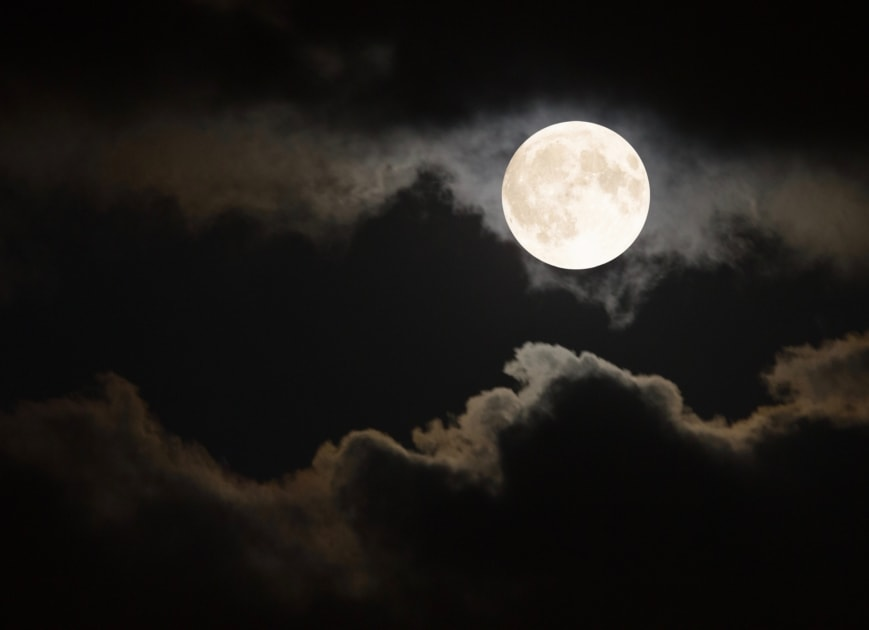

The Moon is Earth's only natural satellite. It is the fifth largest satellite in the Solar System and the largest and most massive relative to its parent planet, with a diameter about one-quarter that of Earth .The Moon is a planetary-mass object with a differentiated rocky body, making it a satellite planet under the geophysical definitions of the term and larger than all known dwarf planets of the Solar System. It lacks any significant atmosphere, hydrosphere, or magnetic field. Its surface gravity is about one-sixth of Earth's at 0.1654 g, with Jupiter's moon Io being the only satellite in the Solar System known to have a higher surface gravity and density.
